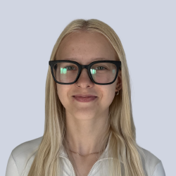
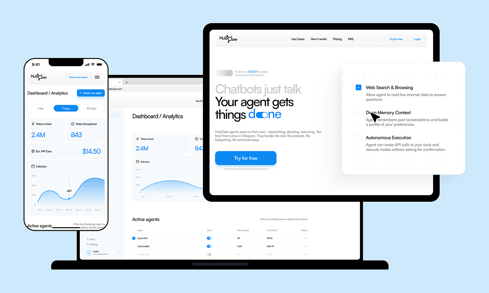
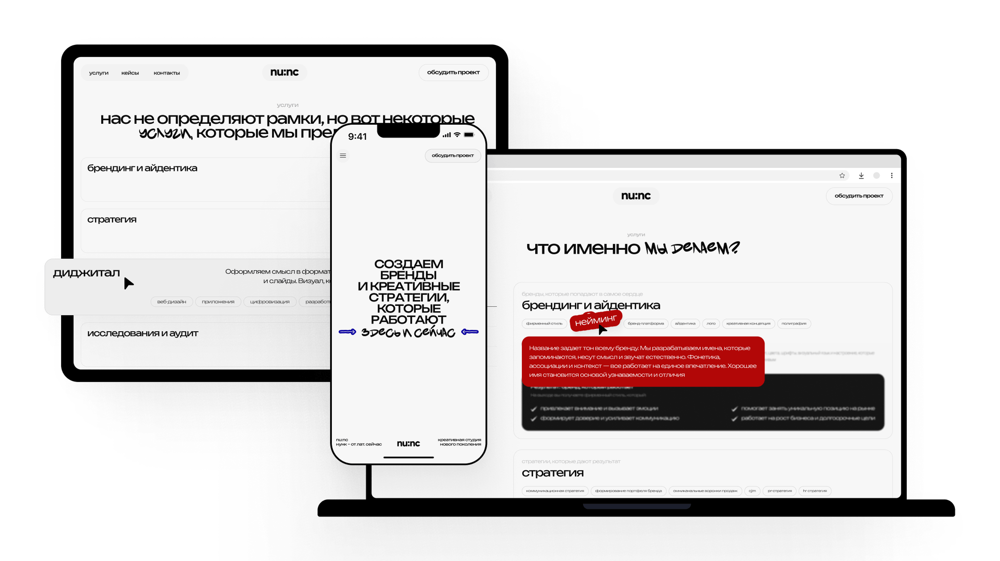
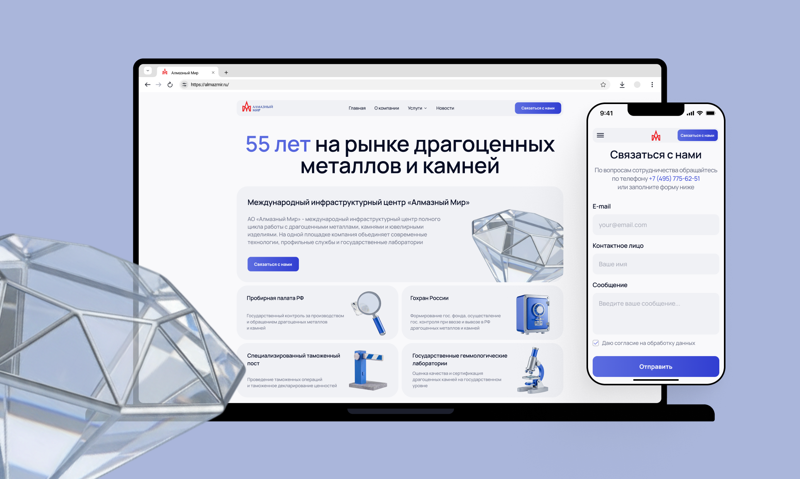
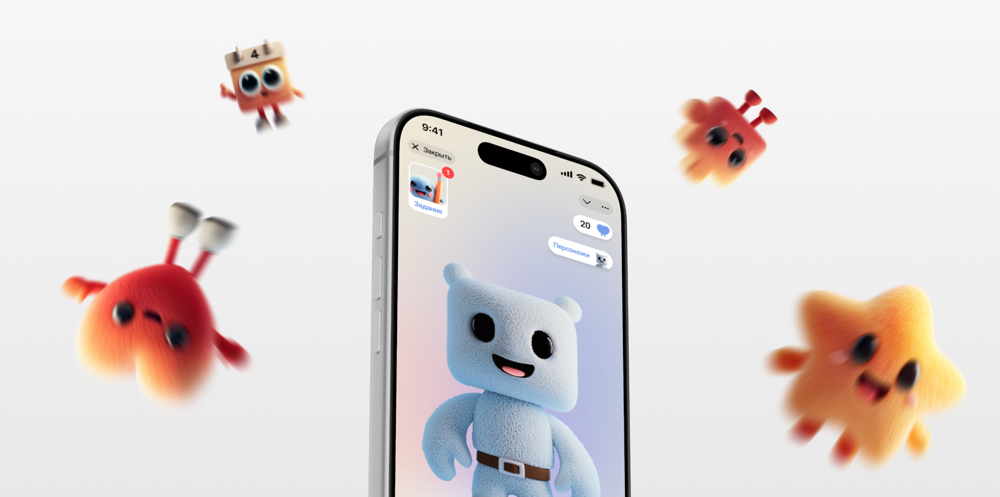
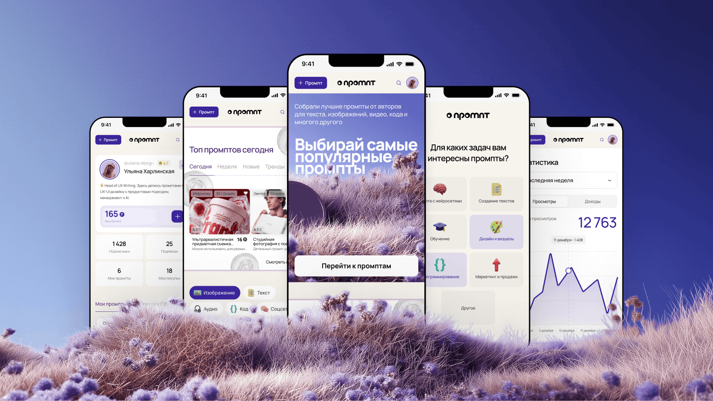

Эстетика. Логика. AI-ускорение.
Создаю современные цифровые продукты с фокусом на пользовательский опыт.
Я UX/UI дизайнер, который объединяет чистую типографику, продуктовый подход и мощь нейросетей. Самостоятельно веду проекты от брифинга до передачи в верстку (или собираю сама на Tilda). Избавляю интерфейсы от хаоса, чтобы пользователи влюблялись в продукт, а бизнес достигал своих целей.
Написать в тг
HubClaw SaaS
Проектирование дашбордов, биллинга и сложного флоу настройки ботов.

Креативное агентство NUNC
Корпоративный сайт для креативного агентства с акцентом на современную типографику.

Алмазный Мир
Многостраничный корпоративный продукт для инфраструктурного центра.

ToKnow Mobile App
Мобильное приложение для развития эмоциональной близости через вопросы и диалог.

E-commerce Маркетплейс
Разработка платформы для промптов с чистой архитектурой и снижением показателя отказов на 15%.
Опыт / Навыки
Смотреть полное CV →Опыт работы
- UX/UI Designer в NUNC Studio Май 2025 – Настоящее время (1 год и 2 месяца). Успешно спроектировала и запустила более 10 проектов в сферах Tech, SaaS, E-commerce.
- Внедрение AI и Handoff Интеграция ИИ в пайплайн (ускорение выдачи решений на 30%). Полный цикл: от брифинга заказчика до передачи pixel-perfect макетов в разработку.
- Коммуникация Брала на себя роль аккаунт-менеджера: самостоятельно проводила брифинги, управляла ожиданиями и защищала дизайн-решения перед стейкхолдерами.
Инструменты & AI
Hard Skills: UX-исследования, CJM, User Flows, Wireframing, Rapid Prototyping, адаптивный дизайн.
Soft Skills: Проактивность, аргументация решений, автономность, внимание к деталям.
Обучение
- UX UI Design Pro (2024-2025)